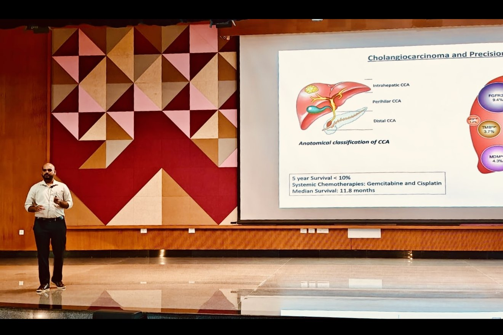
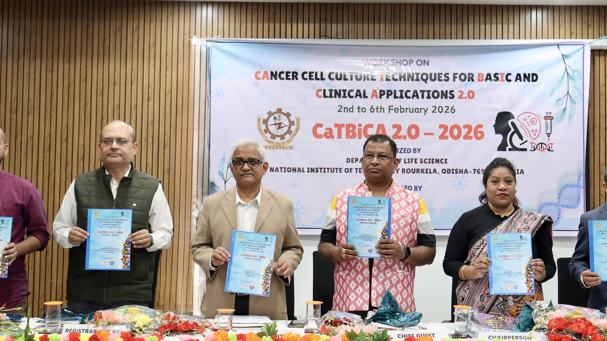
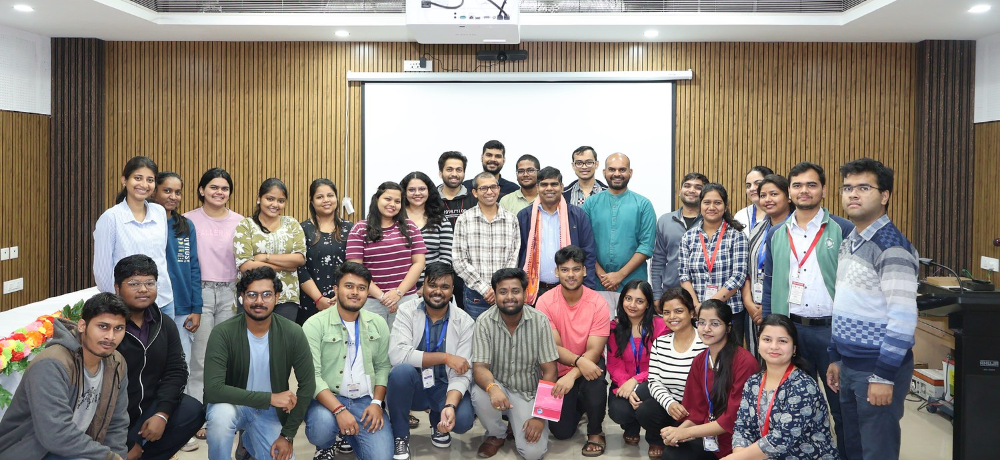

Concepts are taught from original research papers and case studies rather than textbook summary alone. Laboratory courses run as complete experiments — design through to data, interpretation and communication.

LS3003 Genetics
Autumn semester, every year since 2023
Foundations and classical heredity
Scope of genetics; Mendel’s experiments and the laws of inheritance; model organisms; monohybrid and dihybrid crosses; probability and pedigree analysis.
Non-Mendelian inheritance and the chromosomal basis
Incomplete dominance, codominance and multiple alleles; epistasis; lethal alleles, pleiotropy, penetrance and expressivity; linkage, recombination and genetic mapping.
Sex, mutation and chromosomal variation
Sex determination and sex-linked traits; dosage compensation and X-inactivation; mutagens and DNA repair; aneuploidy and structural change; transposable elements.
Human, molecular and applied genetics
Human genome variation; Mendelian and chromosomal disorders; cancer genetics; genetic screening and its ethics; genomics, precision medicine and genetic engineering.
LS3075 Life Science Laboratory V
Autumn semester, since 2025
Model organisms and nucleic acid work
Handling Drosophila, Arabidopsis and mouse; genomic DNA extraction, quantification and gel integrity checks.
From in silico design to a finished construct
Primer design and cloning simulation in SnapGene; PCR optimisation; restriction digestion, ligation and confirmation of the clone.
Cytogenetics, mutagenesis and inheritance
Mitotic and meiotic spreads, ploidy and karyotyping; EMS or UV mutagenesis and phenotype screening; pedigree interpretation.
CRISPR–Cas9, simulated
Designing guide RNAs, simulating a knockout in silico, interpreting the outcome.
LS1001 Biology
Autumn 2023, then Spring
Biology in engineering science
Biomimicry — from turbine blades and the Shinkansen to SONAR. The five-kingdom classification.
Cells and cell theory
Unicellular and multicellular organisms; cell theory, classical and modern.
Cell morphology and anatomy
Prokaryotes by shape, nutrition and cell wall; archaea and their habitats; eukaryotic cells across animals, plants and fungi; ultrastructure of each.
Cell multiplication
Binary fission and budding; the eukaryotic cell cycle, mitosis, meiosis and their checkpoints.
Biomolecules
Proteins — amino acids, structure, function. Carbohydrates — sugars, polysaccharides, glycolysis and the TCA cycle. Lipids — fatty acids and their roles. Nucleic acids — DNA structure through Chargaff’s rule and Watson–Crick pairing, RNA types, genome organisation.
The central dogma
Replication, transcription and translation.
LS3606 Food Science
Spring semester, every year since 2024
Food chemistry
Carbohydrates, proteins, lipids, dietary fibres, pigments and flavours; enzymatic and non-enzymatic browning.
Nutrition
Nutritional and calorific values; protein efficiency ratio; vitamins and minerals; antinutrients and deficiency diseases.
Microbiology and spoilage
Growth and death kinetics; chemical, thermal and microbial spoilage; foodborne disease; fermented foods.
Processing and preservation
Processing principles, hurdle technology, preservatives and additives.
LS6011 Molecular Pathogenesis
Spring semester, every year since 2024
What molecular pathology is
How it departs from classical pathology.
Methods
PCR and RFLP; sequencing and the bioinformatics workflow; DNA probes, microarray, FISH, blotting, immunohistochemistry and DNA fingerprinting.
Infectious disease
How a pathogen establishes infection and what it changes in the host — worked through HIV, tuberculosis and malaria.
Non-communicable disease
The molecular basis of cancer, and of neurological, cardiovascular and metabolic disorders.
Therapeutics and where the field is going
Targeted therapy and molecular diagnostics; pharmacogenomics and personalised medicine; digital pathology and AI.
Workshops
Hands-on training run for students and researchers from institutions across the country.
CaTBiCA 2.0
Cancer Cell Culture Techniques for Basic and Clinical Applications — a five-day national workshop at NIT Rourkela, 2–6 February 2026. Co-Coordinator.
CaTBiCA 1.0
The inaugural edition of the same workshop. Secretary.


Slides and problem sets reach registered students through the institute’s own channels during the semester. If you need something and cannot find it there, write and ask.